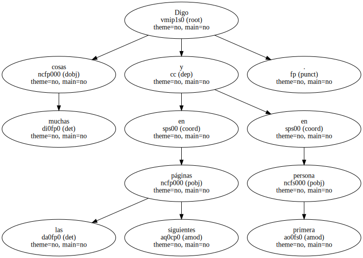
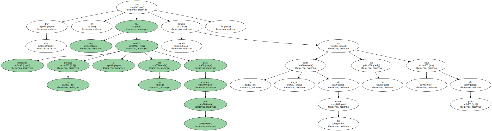
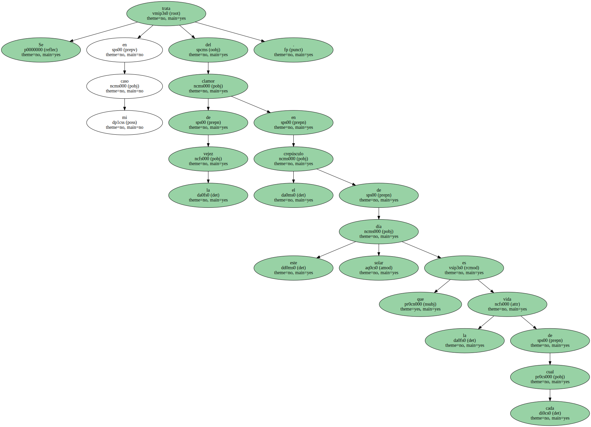
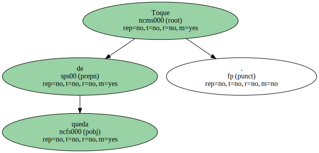
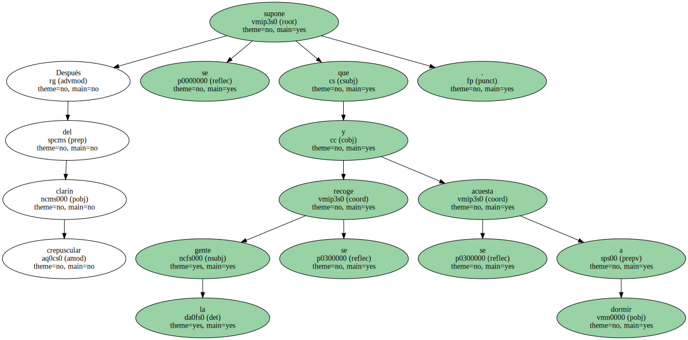
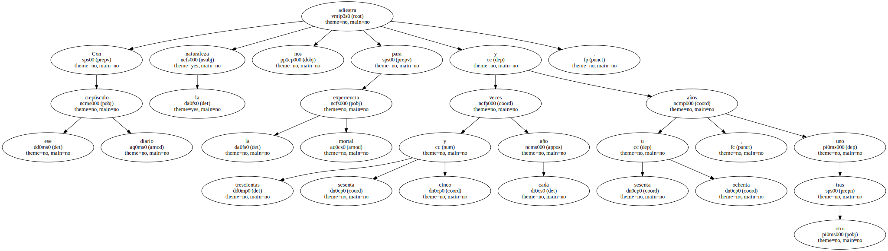
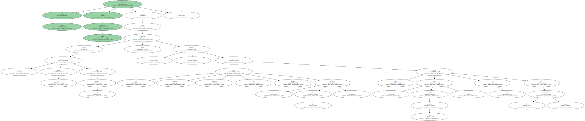
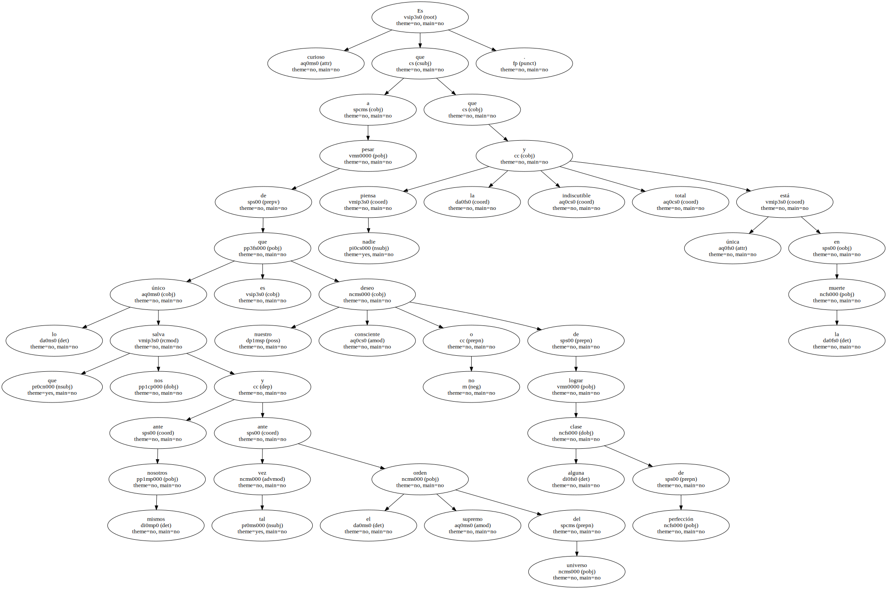
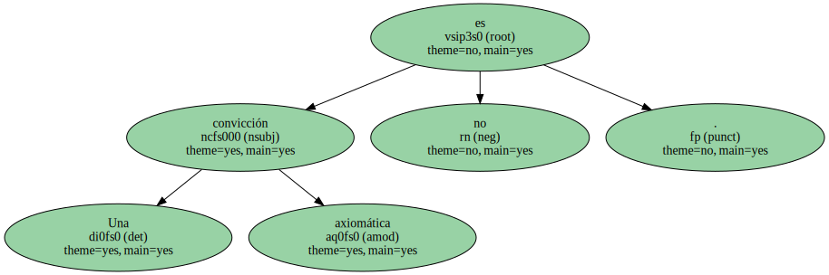

Digo muchas cosas en las páginas siguientes y en primera persona.
Por eso no creo que sea necesario escribir un prólogo a no ser para explicar el título aunque la mayor parte de los lectores saben lo que es el toque de queda.
Se trata en mi caso del clamor de la vejez en el crepúsculo de este día solar que es la vida de cada cual.
Toque de queda.
Después del clarín crepuscular se supone que la gente se recoge y se acuesta a dormir.
Con ese crepúsculo diario la naturaleza nos adiestra para la experiencia mortal trescientas sesenta y cinco veces cada año y sesenta u ochenta años , uno tras otro.
La verdad es que nadie aprende aunque no se puede negar que cuando llega el turno todos mueren esa muerte ejemplar que nunca crea adeptos ni adictos ( excepto los suicidas ) pero que todos , incluidos los suicidas , llevan a cabo con la mayor perfección.
Es curioso que a pesar de que lo único que nos salva ante nosotros mismos y tal vez ante el orden supremo del universo es nuestro deseo consciente o no de lograr alguna clase de perfección nadie piensa que la única indiscutible y total está en la muerte.
Yo tampoco suelo decírmelo a mí mismo , la verdad.

Una convicción axiomática no es lo mismo que una ambición de perfecciones vitalistas y gozaderas.
